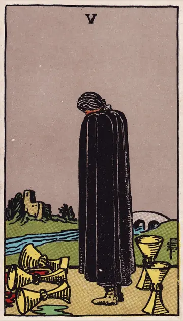

正位置カップの5の正位置
キーワード：喪失感・後悔・悲しみ
恋愛
失ったものや、うまくいかなかったことに心が向きやすい時です。
相手の気持ちあなたとの関係で、後悔を抱えているようです。
この先時間とともに、心の傷が癒えていきそうです。
アドバイス悲しい気持ちを、無理に打ち消さなくて大丈夫です。
気をつけること後悔ばかりで、今の自分を責めないように。
この先時間とともに、心の傷が癒えていきそうです。
アドバイス悲しい気持ちを、無理に打ち消さなくて大丈夫です。
気をつけること後悔ばかりで、今の自分を責めないように。
人間関係
期待が外れて、がっかりしやすい時です。
相手の気持ちあなたとの間にあったことを、残念に思っているようです。
この先支えてくれる人の存在に、気づけそうです。
アドバイス残っている大切なつながりに、目を向けてみましょう。
気をつけること過去のことで、相手を責め続けないように。
この先支えてくれる人の存在に、気づけそうです。
アドバイス残っている大切なつながりに、目を向けてみましょう。
気をつけること過去のことで、相手を責め続けないように。
仕事・学業
失敗を引きずり、気持ちが沈みやすい時期です。
この先失敗が、次の成功の土台になりそうです。
アドバイス失敗から学べることを、一つ見つけましょう。
気をつけること一度の失敗で、すべてを諦めないように。
アドバイス失敗から学べることを、一つ見つけましょう。
気をつけること一度の失敗で、すべてを諦めないように。
お金
お金のことで、がっかりしやすい時です。
この先立て直す道が見えてきそうです。
アドバイス失ったものより、残っているものを数えましょう。
気をつけること取り返そうとして、無理をしないように。
アドバイス失ったものより、残っているものを数えましょう。
気をつけること取り返そうとして、無理をしないように。
生活
暮らしの中で、残念なことが起きやすい時です。
この先少しずつ、気持ちが軽くなりそうです。
アドバイス落ち込んだときは、無理せず休みましょう。
気をつけること一人で抱え込まないように。
アドバイス落ち込んだときは、無理せず休みましょう。
気をつけること一人で抱え込まないように。
今日の運勢
残念な気持ちになりやすい日です。
この先気持ちが少しずつ軽くなりそうです。
アドバイス自分をいたわることを優先しましょう。
気をつけること落ち込みを、一人で抱えないように。
アドバイス自分をいたわることを優先しましょう。
気をつけること落ち込みを、一人で抱えないように。
逆位置カップの5の逆位置
キーワード：立ち直り・希望・前を向く
恋愛
悲しみから立ち直り、前を向ける時です。
相手の気持ち過去のことを乗り越えて、前を向こうとしているようです。
この先新しい希望が見えてきそうです。
アドバイス過去の経験を糧に、新しい一歩を踏み出しましょう。
気をつけること無理に明るく振る舞いすぎないように。
この先新しい希望が見えてきそうです。
アドバイス過去の経験を糧に、新しい一歩を踏み出しましょう。
気をつけること無理に明るく振る舞いすぎないように。
人間関係
失いかけた関係を、見直せる時です。
相手の気持ちあなたとの関係を、やり直したいと感じているようです。
この先関係を修復できそうです。
アドバイス許せることは、少しずつ許していきましょう。
気をつけること過去を、なかったことにしないように。
この先関係を修復できそうです。
アドバイス許せることは、少しずつ許していきましょう。
気をつけること過去を、なかったことにしないように。
仕事・学業
失敗から立ち直り、再挑戦できる時期です。
この先再挑戦が、良い結果につながりそうです。
アドバイス学んだことを生かして、もう一度挑戦しましょう。
気をつけること同じ失敗を繰り返さないように。
アドバイス学んだことを生かして、もう一度挑戦しましょう。
気をつけること同じ失敗を繰り返さないように。
お金
お金の失敗から、立ち直れる時です。
この先少しずつ回復していきそうです。
アドバイス学んだことを、次の使い方に生かしましょう。
気をつけること同じ失敗を繰り返さないように。
アドバイス学んだことを、次の使い方に生かしましょう。
気をつけること同じ失敗を繰り返さないように。
生活
落ち込んだ気持ちから、立ち直れる時です。
この先前向きに暮らせそうです。
アドバイス気分が上がることを、一つしてみましょう。
気をつけること無理に明るく振る舞いすぎないように。
アドバイス気分が上がることを、一つしてみましょう。
気をつけること無理に明るく振る舞いすぎないように。
今日の運勢
気持ちが上向いていく日です。
この先前向きな気持ちになれそうです。
アドバイス前向きになれることを、一つしてみましょう。
気をつけること立ち直ったばかりの時は、無理をしないように。
アドバイス前向きになれることを、一つしてみましょう。
気をつけること立ち直ったばかりの時は、無理をしないように。
このページの文章は、アプリ「ひとやすみタロット」の結果に使っている文章です。アプリでは、あなたの相談や、カードが出た位置（今の状況・これからの流れ・アドバイス）に合わせて、この中から文章を選びます。逆位置の読み方は逆位置のことをご覧ください。
「カップの5」が出たら、あなたの相談ではどう読む？
アプリでは、質問への答えに合わせて、カードの言葉をあなたの相談に合わせて届けます。
Android 対応・会員登録なし